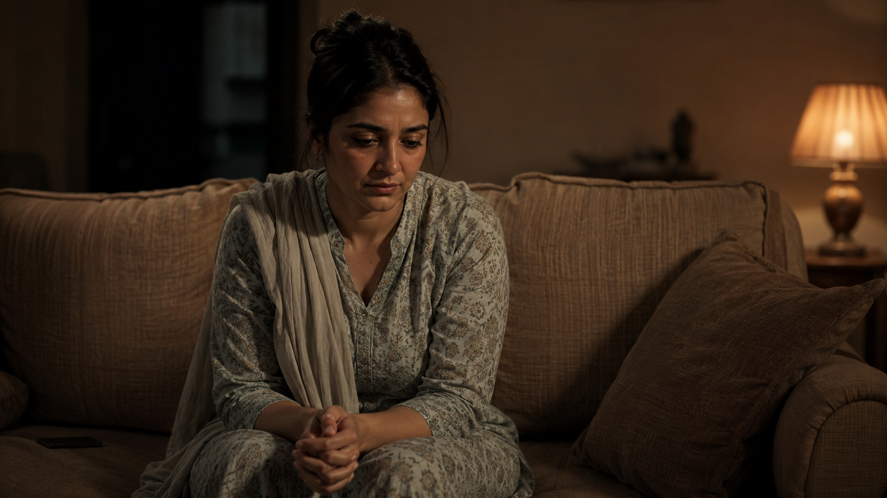

"Main bas thaka hua hoon." I am just tired. This is the sentence I hear most often from clients in Pakistan who are, in truth, living with depression. Not laziness. Not weakness of faith. Not a bad attitude. Depression — a real, diagnosable, and treatable condition that millions of Pakistanis carry silently every single day.
If you have been feeling persistently low, empty, or disconnected for more than two weeks, this article is for you. We will look at what depression actually feels like in a Pakistani context, why so few people seek help, and how therapy for depression works — including what you can expect from online sessions.
How Widespread Is Depression in Pakistan?
Pakistan's National Psychiatric Morbidity Survey (2022) found that 35.7% of the population is living with a common psychiatric illness, which includes depression and anxiety disorders. The World Health Organization estimates that 24 million people in Pakistan need psychiatric help.
Sources: National Psychiatric Morbidity Survey of Pakistan, 2022 | Frontiers in Health Services, 2024What Depression Actually Feels Like — In Our Context
In Pakistan, we rarely say "I am depressed." Instead we say:
- "Dil nahi lagta kisi cheez mein" — I find no interest in anything.
- "Neend nahi aati raat ko" — I cannot sleep at night.
- "Sab kuch theek hai phir bhi andar se khali lagta hai" — Everything is fine on the outside, but inside I feel empty.
- "Main khud ko burden samajhta/samajhti hoon" — I feel like a burden on everyone.
These are not complaints. These are symptoms. Clinical depression is not a mood. It is a shift in how your brain functions — affecting your sleep, appetite, concentration, motivation, and your sense of self.
Common signs to look out for include:
- Persistent low mood lasting most of the day, nearly every day, for at least two weeks
- Loss of pleasure in things you used to enjoy — hobbies, socialising, food, even family
- Fatigue that sleep does not fix — you wake up exhausted
- Difficulty concentrating — work, studies, even conversations feel overwhelming
- Changes in appetite or weight — eating too much or too little
- Physical aches — headaches, body pain, or stomach issues with no clear medical cause
- Feelings of worthlessness or guilt — often amplified by family expectations
- Withdrawing from people — avoiding calls, gatherings, even loved ones
- Thoughts of hopelessness — feeling like things will never get better
If you recognise five or more of these symptoms over two weeks or more, please do not dismiss them as tiredness or weakness. This is your mind asking for help.
The Pakistani Barrier: Why We Suffer in Silence
Research published in Frontiers in Psychiatry (2025) identified cultural narratives, social norms, and stigma as the primary reasons Pakistanis avoid seeking mental health support. In plain language, we have all heard these phrases:
- "Yeh sab waswasa hai" — This is all just whispers of the devil.
- "Zyada socha karo mat" — Stop overthinking.
- "Shukr karo, logon ke haal aur bure hain" — Be grateful, others have it worse.
- "Kamzor iman wale hain jo depression hota hai" — Only people with weak faith get depressed.
These responses, however well-intentioned, send one message: your pain is not real, or it is your fault. This is why over 90% of people in low-and-middle-income countries — including Pakistan — never access mental health treatment despite needing it.
Source: WHO-AIMS Evaluation of Pakistan's Mental Healthcare System, Springer Nature 2024Depression is not a character flaw. It is not weakness of faith. It is a health condition with biological, psychological, and social roots — and it responds to treatment, just as high blood pressure or diabetes does.
How Therapy for Depression Works
There are several evidence-based therapies used to treat depression. At Healing with Attia, the approach is integrative — meaning sessions are tailored to you, drawing from different therapeutic methods based on what you need.
Cognitive Behavioural Therapy (CBT)
CBT is one of the most extensively researched and effective treatments for depression. It works by identifying the negative thought patterns that fuel low mood — thoughts like "I am useless," "nothing will ever change," or "everyone would be better off without me" — and gradually challenging and replacing them with more balanced perspectives. Research on culturally adapted CBT in Pakistan has shown significant reductions in depressive symptoms, with participants finding the therapy culturally and religiously meaningful.
Integrative Psychotherapy
Sometimes depression is connected to unresolved grief, a difficult relationship, trauma, or a life transition — a divorce, a job loss, the death of a parent. Integrative therapy goes deeper, exploring the emotional roots of depression rather than just managing its surface symptoms. It combines elements of CBT, person-centred therapy, and trauma-informed approaches to treat the whole person, not just the diagnosis.
Behavioural Activation
Depression has a cruel logic: it makes you withdraw from the things that would actually help you feel better. Behavioural activation gently rebuilds a structure of meaningful activity — not as a forced performance of happiness, but as a way of slowly reigniting your engagement with life.
Depression Is Treatable
The WHO ranks depression as the single largest contributor to global disability. But it is also one of the most treatable mental health conditions — with the right support, the majority of people with depression recover fully.
Source: Frontiers in Health Services — Closing the Mental Health Gap in Pakistan, 2024Why Online Therapy for Depression Makes Sense in Pakistan
Pakistan has fewer than 500 psychiatrists for a population of over 220 million — and the majority are concentrated in a handful of major cities. For most Pakistanis, accessing quality mental health care means overcoming geographical barriers, cost, and the very real fear of being seen walking into a clinic.
Source: WHO-AIMS Evaluation of Pakistan's Mental Healthcare System, 2024Online therapy removes every one of those barriers:
- Privacy: Sessions happen from your home, your car, or wherever you feel safe. No waiting room. No neighbours to run into. No visible stigma.
- Accessibility: Whether you are in Lahore, Karachi, Islamabad, or a smaller city, help is a Zoom link away.
- Language: Healing with Attia offers sessions in Urdu and English — because depression is easier to name in the language closest to your heart.
- Affordability: Sessions start from PKR 5,000 — significantly more affordable than many in-person clinics while maintaining the same professional, evidence-based standard of care.
When to Seek Therapy for Depression
You do not need to be in crisis to seek help. In fact, the earlier you begin therapy for depression, the faster and more complete the recovery tends to be. Consider booking a session if:
- Your low mood has lasted more than two weeks
- You are struggling to function at work, in your studies, or at home
- You have withdrawn from family and friends
- You are sleeping too much or too little, or your appetite has significantly changed
- You are having thoughts of hopelessness or of not wanting to be here
If you are having thoughts of suicide or self-harm, please reach out immediately — to a trusted person, or via WhatsApp to begin a session as soon as possible.
You Don't Have to Carry This Alone
Depression is real, it is common, and it is treatable. Healing with Attia offers confidential online therapy for depression across Pakistan — in Urdu and English — with a UK-certified integrative psychotherapist.
Book Your First Session via WhatsApp